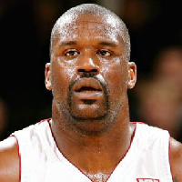
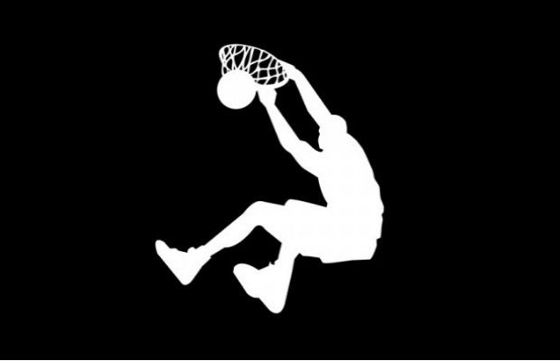

Shaquill O'neal


In his rookie season with the Orlando Magic, Shaquille O'Neal, also known as "Shaq," finished in the Top 10 in scoring, rebounding, blocks and shooting percentage. A notoriously bad free-throw shooter, Shaq focused on trying to get more of his points on the power slam, and hearty NBA centers quickly learned to try to foul Shaq rather than give him an easy shot. Shaq became the first player in NBA history to be named "Player of the Week" in his first week in the league. In 1996, Shaq signed the biggest contract in NBA history, seven years for $120 million with the Los Angeles Lakers. That same year, he helped the United States' Dream Team win gold at the Olympic Games in Atlanta, Georgia. By the end of the decade, Shaq was a three-time member of the All-NBA Third Team (1994, 1996 and 1997) and a two-time member of the All-NBA Second Team (1995 and 1999), and had earned a place on the All-NBA First Team (1998). (After debuting with the league's First Team in '98, he would be selected to the First Team seven more times — every year from 2000 to 2006.) In 2000, Shaq was named the NBA's Most Valuable Player. Prior to the 2000-01 season, the Lakers signed Shaq to a three year, $88.5 million contract extension, and the larger-than-life center helped deliver three consecutive world championships to the team (2000, 2001 and 2002). In 2004, however, following growing dismay with team management and friction with teammate Kobe Bryant, Shaq was traded to the Miami Heat.
Back